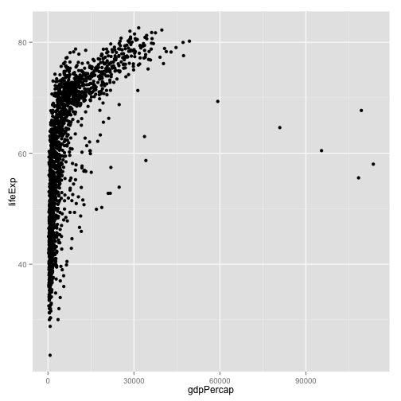
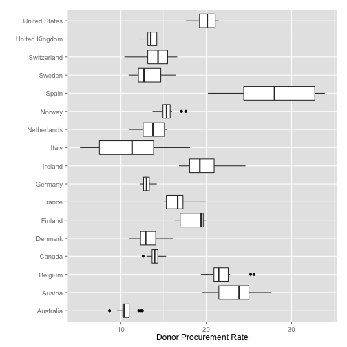

Looking at Data
Data Visualization, Week 3
Kieran Healy, Duke University
Outline for Today
- Housekeeping
- Patterns in Data
- Recapping
ggplotfundamentals - Worked examples with the Gapminder Data
- A new dataset
- Dot plots and other 1-D summaries
How to Navigate these Slides
- When you view them online, notice the compass in the bottom right corner
- You can go left or right, or sometimes down to more detail.
- Hit the
Escapekey to get an overview of all the slides. On a phone or tablet, pinch to get the slide overview. - You can use the arrow keys (or swipe up and down) in this view, as well.
- Hit
Escapeagain to return to the slide you were looking at. - On a phone or tablet, tap the slide you want.
Reminder
- There are two ways to learn R: the easy way and the tedious way.
- The problem is that the easy way doesn't work.
- You have to practice the examples and work through them manually. Type them out, even if you're just copying at the beginning. It really will help you get used to how the language works.
We're good at seeing patterns in data

- (Images: Peter Coles)
Maybe a little too good
- (L) Random 2-D Poisson Process.
- (R) Random Process with added spatial anti-correlation.
- (Images: Peter Coles)
ggplot
gapminder.url <- "https://raw.githubusercontent.com/socviz/soc880/master/data/gapminder.csv"
my.data <- read.csv(url(gapminder.url))
dim(my.data)
## [1] 1704 6
head(my.data)
## country continent year lifeExp pop gdpPercap
## 1 Algeria Africa 1952 43.077 9279525 2449.008
## 2 Algeria Africa 1957 45.685 10270856 3013.976
## 3 Algeria Africa 1962 48.303 11000948 2550.817
## 4 Algeria Africa 1967 51.407 12760499 3246.992
## 5 Algeria Africa 1972 54.518 14760787 4182.664
## 6 Algeria Africa 1977 58.014 17152804 4910.417
## We'll be a bit more verbose
## to make things clearer
p <- ggplot(data=my.data,
aes(x=gdpPercap,
y=lifeExp))
p + geom_point()

The Plot-Making Process
0. Start with your data in the right shape
1. Tell ggplot what relationships you want to see
2. Tell ggplot how you want to see them
3. Layer these pictures as needed
4. Fine-tune scales, labels, tick marks, etc
Mapping variables to aesthetic features
ggplotworks by building your plot piece by piece- The
aes()function maps variables to aesthetic features of the plot. - The
xandyvalues are the most obvious ones. - Other aesthetic mappings include, e.g.,
color,shape, andsize. - These mappings are not directly specifying what specific, e.g., colors or shapes will be on the plot. Rather they say which variables in the data will be represented by, e.g., colors and shapes.
Specify aesthetic mappings all at once, or per geom layer
p + geom_point(aes(color=continent)) +
geom_smooth(method="loess") +
scale_x_log10()

Layer functions have options other than aesthetic mappings. These don't go in inside the aes() function
p + geom_point(aes(color=continent)) +
geom_smooth(color="darkgreen", se=FALSE, size=2, method="lm") +
scale_x_log10()

First geoms, then scales, then labels, theme elements, and titles
library(scales)
p + geom_point(aes(color=continent)) +
geom_smooth(color="orange", method="loess", se=FALSE, size=2) +
scale_x_log10(labels=comma) +
labs(x="GDP per Capita",
y="Life Expectancy",
color="Continent") +
theme(legend.position="bottom") +
ggtitle("Broad Trends")

When ggplot misbehaves or gives unexpected output, it is usually because the mapping you have specified is not what you need, or the variable is not appropriate to the aesthetic feature in some way
p <- ggplot(my.data,
aes(x=gdpPercap, y=lifeExp))
p + geom_line() +
scale_x_log10()

- What's wrong with this picture?
Put year on the x-axis
p <- ggplot(my.data,
aes(x=year, y=lifeExp))
p + geom_line() +
scale_x_log10()
- Hmm, not much better
- Also, why are there no x labels for years?
Put year on the x-axis
p <- ggplot(my.data,
aes(x=year, y=lifeExp))
p + geom_line()

- Fix the scale.
- The plot is still meaningless, unfortunately
p <- ggplot(my.data,
aes(x=year, y=lifeExp))
p + geom_line(aes(group=country))

- More promising
p <- ggplot(my.data,
aes(x=year, y=lifeExp))
p + geom_line(aes(group=country,
color=continent))

- Better
Let's just look at Asia
p <- ggplot(my.data,
aes(x=year, y=lifeExp))
p + geom_line(aes(group=country,
color=(continent=="Asia")))

Better colors
p <- ggplot(my.data,
aes(x=year, y=lifeExp))
p + geom_line(aes(group=country,
color=(continent=="Asia"))) +
scale_color_manual(values=c("gray70", "firebrick"))

Better Legend Labels
p + geom_line(aes(group=country,
color=(continent=="Asia"))) +
scale_color_manual(values=c("gray70", "firebrick"),
labels=c("All Other Countries", "Asian Countries")) +
scale_x_log10()
Better Legend Title and Position
p + geom_line(aes(group=country,
color=(continent=="Asia"))) +
scale_color_manual(values=c("gray70", "firebrick"),
labels=c("All Other Countries", "Asian Countries")) +
labs(color="Country") +
theme(legend.position="top")

Make the Salient category the first one
p + geom_line(aes(group=country,
color=(continent=="Asia"))) +
scale_color_manual(values=c("gray70", "firebrick"),
labels=c("All Other Countries", "Asian Countries")) +
labs(color="Country") +
theme(legend.position="top") +
guides(color=guide_legend(reverse = TRUE))

And add labels
p + geom_line(aes(group=country,
color=(continent=="Asia"))) +
scale_color_manual(values=c("gray70", "firebrick"),
labels=c("All Other Countries", "Asian Countries")) +
labs(x="Year",
y="Life Expectancy",
color="Country") +
theme(legend.position="top") +
guides(color=guide_legend(reverse = TRUE))

- Still lots of room for improvement. E.g., note how the Asian trend lines are drawn under the gray ones.
To see the logic behind each plot, peel each layer off from the last one to the first. See which parts of the plot change, or disappear.
A New Dataset
organs.url <- "https://raw.githubusercontent.com/socviz/soc880/gh-pages/data/organ-procurement.csv"
organs.data <- read.csv(url(organs.url), row.names=1)
dim(organs.data)
## [1] 238 20
head(organs.data)
## country year donors pop pop.dens gdp gdp.lag health health.lag
## 1 Australia NA NA 17065 0.2204433 16774 16591 1300 1224
## 2 Australia 1991 12.09 17284 0.2232723 17171 16774 1379 1300
## 3 Australia 1992 12.35 17495 0.2259980 17914 17171 1455 1379
## 4 Australia 1993 12.51 17667 0.2282198 18883 17914 1540 1455
## 5 Australia 1994 10.25 17855 0.2306484 19849 18883 1626 1540
## 6 Australia 1995 10.18 18072 0.2334516 21079 19849 1737 1626
## pubhealth roads cerebvas assault external txp.pop world opt
## 1 4.8 136.5954 682 21 444 0.9375916 Liberal In
## 2 5.4 122.2518 647 19 425 0.9257116 Liberal In
## 3 5.4 112.8322 630 17 406 0.9145470 Liberal In
## 4 5.4 110.5451 611 18 376 0.9056433 Liberal In
## 5 5.4 107.9810 631 17 387 0.8961075 Liberal In
## 6 5.5 111.6091 592 16 371 0.8853475 Liberal In
## consent.law consent.practice consistent
## 1 Informed Informed Yes
## 2 Informed Informed Yes
## 3 Informed Informed Yes
## 4 Informed Informed Yes
## 5 Informed Informed Yes
## 6 Informed Informed Yes
## For convenience, let R know year is a time measure.
organs.data$year <- ad.Date(strptime(organs.data$year, format="%Y"))
## Error in eval(expr, envir, enclos): could not find function "ad.Date"
Similar country-year structure to before
- Before looking at the next few slides, what can you get out of this dataset?
- Try examining it and making a few plots
p <- ggplot(data=organs.data,
aes(x=as.Date(year),
y=donors))
p + geom_line(aes(group=country,
color=consent.law)) +
scale_color_manual(values=c("gray40", "firebrick")) +
scale_x_date() +
labs(x="Year",
y="Donors",
color="Consent Law") +
theme(legend.position="top")
## Error in as.Date.numeric(year): 'origin' must be supplied
p + geom_line(aes(group=country)) +
labs(x="Year",
y="Donors") +
facet_grid(~consent.law)
## Error in as.Date.numeric(year): 'origin' must be supplied
A quick bit of data manipulation
library(magrittr)
library(dplyr)
by.country <- organs.data %>% group_by(consent.law, country) %>%
summarize(donors=mean(donors, na.rm = TRUE))
by.country
## Source: local data frame [17 x 3]
## Groups: consent.law [?]
##
## consent.law country donors
## (fctr) (fctr) (dbl)
## 1 Informed Australia 10.63500
## 2 Informed Canada 13.96667
## 3 Informed Denmark 13.09167
## 4 Informed Germany 13.04167
## 5 Informed Ireland 19.79167
## 6 Informed Netherlands 13.65833
## 7 Informed United Kingdom 13.49167
## 8 Informed United States 19.98167
## 9 Presumed Austria 23.52500
## 10 Presumed Belgium 21.90000
## 11 Presumed Finland 18.44167
## 12 Presumed France 16.75833
## 13 Presumed Italy 11.10000
## 14 Presumed Norway 15.44167
## 15 Presumed Spain 28.10833
## 16 Presumed Sweden 13.12500
## 17 Presumed Switzerland 14.18250
p <- ggplot(by.country, aes(x=donors, y=country, color=consent.law))
p + geom_point(size=3)
- How can we improve this?
p <- ggplot(by.country, aes(x=donors, y=reorder(country, donors), color=consent.law))
p + geom_point(size=3)

- Get your factors (the categorical variable) in order
p + geom_point(size=3) +
labs(x="Donor Procurement Rate (per million population)",
y="",
color="Consent Law") +
theme(legend.position="top")
Alternatively
p <- ggplot(by.country, aes(x=donors, y=reorder(country, donors)))
p + geom_point(size=3) +
facet_grid(consent.law ~ ., scales="free") +
labs(x="Donor Procurement Rate (per million population)",
y="",
color="Consent Law") +
theme(legend.position="top")
Cleveland Dotplots of this sort are a very useful way of summarizing 1-D data that comes in categories
- Consider them in preference to bar or column charts
- Keeping the categories on the y-axis is often a good idea
- The principle extends to 1-D summaries of distributions
- They are also an excellent way to summarize model results with error ranges
Summary Boxplots
p <- ggplot(data=organs.data,
aes(x=country,
y=donors))
p + geom_boxplot() +
coord_flip() +
labs(x="",
y="Donor Procurement Rate")
## Warning: Removed 34 rows containing non-finite values (stat_boxplot).

Summary Boxplots
p <- ggplot(data=organs.data,
aes(x=reorder(country, donors, na.rm=TRUE),
y=donors))
p + geom_boxplot() +
coord_flip() +
labs(x="",
y="Donor Procurement Rate")
## Warning: Removed 34 rows containing non-finite values (stat_boxplot).

Summary Boxplots
p <- ggplot(data=organs.data,
aes(x=reorder(country, donors, na.rm=TRUE),
y=donors))
p + geom_boxplot(aes(fill=consent.law)) +
coord_flip() +
labs(x="",
y="Donor Procurement Rate")
## Warning: Removed 34 rows containing non-finite values (stat_boxplot).

1-D point summaries
p <- ggplot(data=organs.data,
aes(x=reorder(country, donors, na.rm=TRUE),
y=donors))
p + geom_point(aes(color=consent.law)) +
coord_flip() +
labs(x="",
y="Donor Procurement Rate")
## Warning: Removed 34 rows containing missing values (geom_point).
Add a little jitter
p <- ggplot(data=organs.data,
aes(x=reorder(country, donors, na.rm=TRUE),
y=donors))
p + geom_jitter(aes(color=consent.law)) +
coord_flip() +
labs(x="",
y="Donor Procurement Rate")
## Warning: Removed 34 rows containing missing values (geom_point).

Fine-tune the jittering
p <- ggplot(data=organs.data,
aes(x=reorder(country, donors, na.rm=TRUE),
y=donors))
p + geom_jitter(aes(color=consent.law),
position = position_jitter(width=0.2)) +
coord_flip() +
labs(x="",
y="Donor Procurement Rate",
color="Consent Law") +
theme(legend.position="top")
## Warning: Removed 34 rows containing missing values (geom_point).